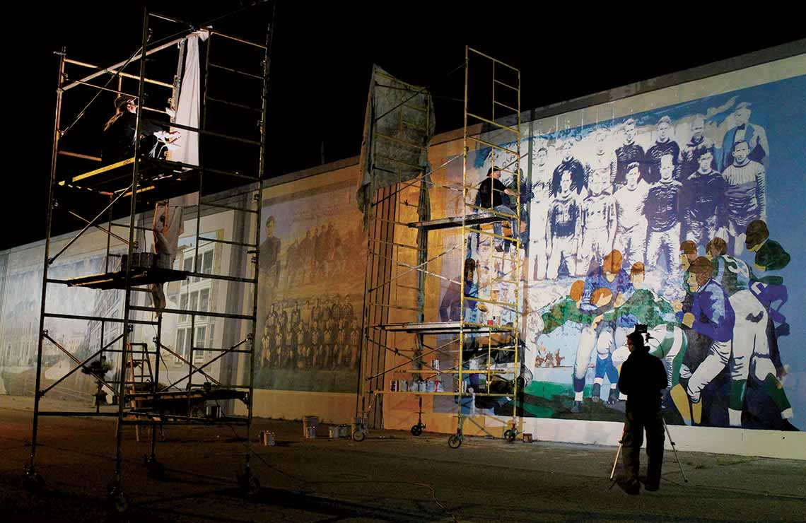
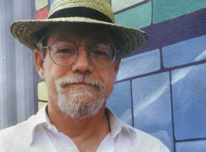
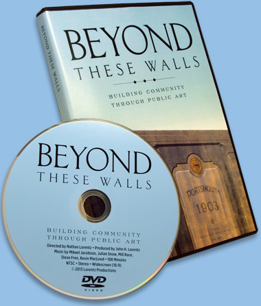

Building Community Through Public Art
In 1992, a group of community leaders in Portsmouth, Ohio asked, "How can we create pride in our community, improve the local economy, and change a dying part of town into the vibrant place it once was?"
This is the story of the local visionaries and extraordinary artists who transformed a drab 2,200-foot section of the town's floodwall into a vast display of public art, history, and pride.
The Artists
Robert Dafford of Lafayette, Louisiana, was chosen as lead artist for the floodwall mural project. An internationally known muralist with over 30 years of experience, Robert has created more than 400 murals throughout the United States, Canada, and Europe.
Viewers will notice that many of the panels bear a three-dimensional illusion: a hallmark of Dafford's style that connects the audience to the artwork in a unique and powerful way.
Dafford and his associate artists, including Portsmouth native Herb Roe, are contracted to maintain the Portsmouth Floodwall murals, keeping them vibrant despite the elements. Their painting season in Portsmouth is from May through September, where visitors may catch a glimpse of the artists in action.
The Murals
The floodwall mural project is an outdoor art gallery depicting the many centuries of Portsmouth, Ohio area history. Subjects range from the ancient mound building Adena and Hopewell cultures to historic sports figures and local notables like actor Roy Rogers, painter Clarence Carter, baseball manager Branch Rickey, writer Jesse Stuart, and actress Julia Marlowe.
The section of floodwall included in the project is 20 feet high and extends for 2,090 feet along Front Street in the historic Boneyfiddle District of downtown Portsmouth. Painting began in 1993. The murals are arranged chronologically from east to west, starting with the depiction of the Mound Builders, who are ancestors of the Shawnee Indians, and ending with murals from the contemporary era.
Purchase the DVD
Beyond These Walls is available on DVD for $24.95
A documentary film, focusing on an grassroots effort, shows that art and history can be a large part of the transformation and revitalization of a community. And it all started with a big flood. This is where the story begins...
Directed by Nathan Lorentz Produced by John H. Lorentz Music by Mikael Jacobson Additional Music Courtesy of Julian Snow, Mill Race, Steve Free, and Kevin MacLeod 68 Minutes NTSC Stereo Widescreen (16:9)
The DVD is also available for purchase locally or via telephone from the Scioto County Welcome Center (740-353-7647) and the Shawnee State University Bookstore (740-351-3155). Made possible in part by a grant from Portsmouth Murals, Inc. Contact us at support@floodwallfilm.org with any questions.
Lorentz Films
Lorentz Films specializes in long form documentaries covering a range of subjects from human interest and political, to educational and technical. In addition to Beyond These Walls, the pair also produced the 2002 documentary River Voices, which recalls both the devastation and the outpouring of community strength caused by the great 1937 Ohio River flood. John, born and raised in Portsmouth, came up with the idea for Beyond These Walls while witnessing the creation and success of the floodwall murals during his tenure at nearby Shawnee State University. Nathan, who filmed and directed the project, resides near Washington, DC.
Nathan Lorentz
Director/Editor/Cinematographer
Nathan Lorentz is a director and editor specializing in documentary filmmaking. He holds a Master's Degree in Producing for Film and Video from the American University in Washington, DC. In addition to his work on River Voices and Beyond These Walls, Lorentz has served as cinematographer on a number of short films.
John H. Lorentz
Producer
Dr. John H. Lorentz is Professor of History Emeritus and Associate Provost for International Education at Shawnee State University. He and son, Nathan, collaborate through Lorentz Films on documentary film. Dr. Lorentz is the principle scholar for River Voices and Beyond These Walls and is the Producer for the films.